Learning the structure of
deep sparse directed graphical models
Ryan P. Adams1, Hanna M. Wallach2, and Zoubin Ghahramani3
1University of Toronto
2University of Massachusetts at Amherst
3University of Cambridge
Machine Learning Summer School
August 2009

Motivation
◮ Present some recent research on graphical model structure
learning...
◮ ...related to deep belief networks...
◮ ...which uses Markov chain Monte Carlo inference...
◮ ...in a non-parametric Bayesian model.

Deep networks
There is a great deal of interest on “deep belief networks”.
Deep belief nets are probabilistic generative models that are
composed of multiple layers of stochastic, latent variables. The
latent variables typically have binary values and are often called
hidden units or feature detectors. The top two layers have
undirected, symmetric connections between them and form an
associative memory. The lower layers receive top-down, directed
connections from the layer above. The states of the units in the
lowest layer represent a data vector.
Geoffrey E. Hinton (2009) Scholarpedia.

Deep networks
Questions:
◮ How many layers should there be?
◮ How wide should each layer be?
◮ What sorts of units?
Goal: To learn the structure of a deep network.
Approach: A nonparametric Bayesian method that learns the
structure of a layered directed deep belief network.

Layered directed deep networks
K
Y
p(x) =
p(xi |x )
πi
i =1
Where x = (x1, . . . , xK ) and πi are the parents of node i.
aka Bayesian networks, probabilistic directed graphical models.
Assume a layered graph structure.
How many layers? How wide should each layer be?

Priors over graph structures
Let (m)
z
= 1 mean that j ∈ π
ij
i , that is, node j is a parent of node i
in layer m.
If we specify a sequence of matrices Z (0), Z (1), Z (2), . . . we have
defined the layered graph structure.

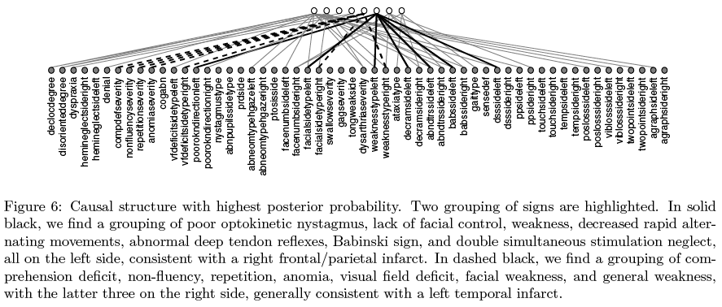
Previous work
A Non-Parametric Bayesian Method for Inferring Hidden Causes
(Wood, Griffiths, Ghahramani, 2006)
Inferring stroke localization from patient symptoms:
Y - binary latent factors (diseases, k)
Z - graph structure (∼ Indian Buffet Process (IBP))
X - observed binary features (56 symptoms, s)
P
Noisy-or: P(x
zsk ykp
sp = 1|Z , Y , λ, ǫ) = 1 − (1 − λ)
k
(1 − ǫ)
The IBP defines a distribution on sparse binary matrices with a
countably infinite number of columns.
Graphical models with an unbounded number of hidden units


Preview of the Indian buffet process
From finite to infinite matrices
zik = 1 means object i has feature k:
zik ∼ Bernoulli(θk )
θk ∼ Beta(α/K , 1)
◮ Note that P (zik = 1|α) = E (θk ) =
α/K , so
α/K +1
as K grows larger the matrix gets sparser.
◮ So if Z is N × K , the expected number of
nonzero entries is Nα/(1 + α/K ) < Nα.
◮ Even in the K → ∞ limit, the matrix is
expected to have a finite number of non-zero
entries.
◮ Two parameter extension θk ∼ Beta(αβ/K , β)


Indian buffet process
Dishes
1
2
3
4
5
6
7
8
9
10
Customers 11
12
13
14
15
16
17
18
19
20
◮ First customer starts at the left of the buffet, and takes a serving
from each dish, stopping after a Poisson(α) number of dishes as his
plate becomes overburdened.
◮ The nth customer moves along the buffet, sampling dishes in
proportion to their popularity, serving himself dish k with probability
mk /n, and trying Poisson(α/n) new dishes.
◮ The customer-dish matrix is the feature matrix, Z .

Cascading Indian buffet process
Start with K (0) rows (visible units)
◮ Z (0) ∼ IBP (α, β) with K (0) rows and K (1) non-zero columns
◮ Z (1) ∼ IBP (α, β) with K (1) rows and K (2) non-zero columns
◮ Z (2) ∼ IBP (α, β) with K (2) rows and K (3) non-zero columns
◮ . . .
This defines a sequences of infinite sparse binary matrices.


Properties of the Cascading IBP
Z (m) ∼ IBP(α, β)
for m = 0, 1, 2, . . .
◮ The expected in-degree of each unit (number of parents) is α.
◮ The expected out-degree of each unit in m (number of children) is
K (m−1) − 1
c(β, m) = 1 +
1 + β
Note that limβ
c(β, m) = 1.
→0 c (β , m) = K (m−1) and limβ→∞
◮ Hidden units are exchangeable at each layer.
◮ Theorem: For K (m) ∈ N, 0 < α < ∞, 0 < β < ∞, the sequence of
K (m) defined by the CIBP reaches the absorption state 0, with
probability one, i.e. lim p(K (m) = 0) = 1.
m→∞


Samples from the prior over structures
α = 1, β = 1
α = 1, β = 12
α = 1 , β = 1
2
α = 1, β = 2
α = 3 , β = 1
2
Samples from the CIBP prior starting from five visible units.


What kinds of units?
We want a model that is flexible enough to learn what types of
unit it needs, ranging from binary to linear-Gaussian.
This idea was explored in Nonlinear Gaussian belief networks (NLGBNs)
by (Frey and Hinton, 1999).
Let u(m) be the activity of units in layer m.
y(m) = (W (m+1) ⊙ Z (m+1))u(m+1) + (m)
γ
where W is a weight matrix, γ is a bias vector and ⊙ is Hadamard
(elementwise) product.
u(m) = σ(y (m) + ǫ(m))
k
k
k
σ is a sigmoid function and noise ǫ(m) ∼ N (0, 1 ) has precision ν(m).
k
ν(m)
k
k


NLGBN units
−1
−0.5
0
0.5
1
−1
−0.5
0
0.5
1
−1
−0.5
0
0.5
1
(a) ν = 1
(b) ν = 5
(c) ν = 1000
2
Three modes of operation for the NLGBN unit. The black solid line
shows the zero mean distribution, the red dashed line shows a pre-sigmoid
mean of +1 and the blue dash-dot line shows a pre-sigmoid mean of −1.
(a) Binary behavior from small precision.
(b) Roughly Gaussian behavior from medium precision.
(c) Deterministic behavior from large precision.

Inference
using Markov chain Monte Carlo
W ∼ N
γ ∼ N
α ∼ G
β ∼ G
ν ∼ G
We design an MCMC scheme to sample from the posterior:
p({Z (m), W (m)}∞
(m)
(m)}∞
m=1, {γ
, ν
m=0, {{u(m)
n
}∞
m=1}N
n=1|{xn }N
n=1)
◮ u - slice sample
◮ W and γ - Gibbs
◮ ν - Gibbs
◮ Z - Gibbs (cf Algorithm 8 of CRPs)

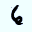
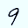

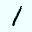

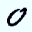

Experiments on MNIST data
Small subset
28 × 28 pixels
100 images (10 from each class)

Samples from Posterior over Structures
2
1
2
2
1
1
2
19
25
14
16
22
20
140
148
154
145
155
150
784
784
784
784
784
784

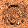
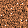
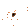

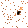


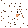
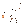
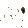
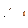


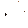
First-Layer Features

Visible Unit Precisions
80
60
40
20
0

Summary
This work provides an initial attempt at addressing three issues
with layered belief networks.
◮ It provides a way to learn belief networks that contain an
arbitrary number of hidden units with nontrivial joint
distributions due to a deep structure.
◮ It allows the units to have different operating regimes and
infer appropriate local representations ranging from discrete
binary to nonlinear continuous behavior.
◮ It provides a way to infer the appropriate directed graph
structure of a layered network.
Initial work... many open questions!
Ryan P. Adams and Hanna M. Wallach

Overall Summary
◮ Graphical models provide a powerful and intuitive framework
for modelling and inference.
◮ Directed, undirected and factor graphs.
◮ Inference by message passing.
◮ Parameter and structure learning.
◮ A recent bit of research on structure learning.
Thanks!

Questions